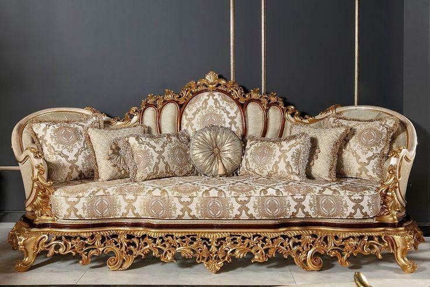

THE HOUSE OF ANTIQUE & CLASSIC FURNITURE
Furniture
with a legacy.
A world of expressive silhouettes, richly upholstered statement pieces and distinguished interiors. Discover classic furniture with presence, personality and enduring appeal.
by nature
THE ART OF ANTIQUE LIVING
Some pieces
make a room.
Others define it.
A home should feel considered. A room should leave an impression.
Okeosisi General Service Nigeria Limited brings more than 38 years of experience to furniture, furnishing and distinctive woodwork. We appreciate the richness of classic design — from sculpted frames and intricate details to elegant room settings made for living.
Explore the styles that inspire us, then talk with our team about the pieces and spaces you have in mind.
THE OKEOSISI STORY ↗
THE COLLECTION
Character in
every room.
From grand living rooms to elegant private spaces, explore a curated selection of classic furniture forms and timeless interiors.


THE BEAUTY IS IN THE DETAIL
Crafted to
catch the eye.
Made to endure.
Graceful curves, intricate carving, rich upholstery and thoughtful finishes give classic furniture its unmistakable character. Our visual showcase brings together the details, settings and styles that define this world.
STEP INSIDE THE SHOWCASE ↗“The right piece does more than fill a space. It gives the space its character.”
THE OKEOSISI APPROACHEXPERIENCE PASSED FORWARD
Over 38 years
of experience.
Built on decades of experience, Okeosisi continues to serve customers with a commitment to quality, considered design and personal service. From furniture enquiries to bespoke requirements, every conversation begins with understanding what you need.

LET'S DISCUSS YOUR SPACE
Good spaces begin
with good choices.
Tell us what you are looking for. Our team is available to discuss furniture, furnishing and woodwork enquiries, and provide a quotation based on your requirements.
MAKE AN ENQUIRY ON WHATSAPP ↗